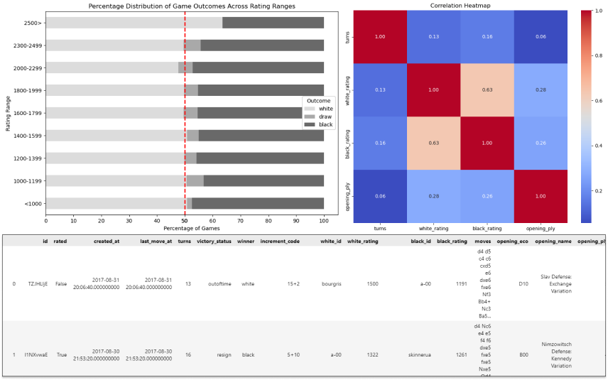

The dataset was obtained from the Breast Cancer Wisconsin (Diagnostic) Data Set (https://www.kaggle.com/datasets/uciml/breast-cancer-wisconsin-data).
In this project, we compared algorithms using training accuracy and AUC scores. The Gradient Boosting classifier and Random Forest classifier showed better results than the others.
Description: During my time at RYTE Corporation as a Data Modeler, I developed a Python script to automate updating the Global Data Model descriptions, enabling automatic extraction of tables (entities), attributes, and their relationships from the ERD into Excel for streamlined analysis.
Impact: Facilitated the process and eliminated manual work, resulting in significant time savings.

Problem: It is challenging to understand the behavior of deformable bodies in computational settings, unlike rigid ones, due to the lack of sufficient computational power to calculate deformable objects in real time.
One potential solution: Use the dGLI matrix to understand the correlation of selected vertices when they are close to each other.
Explanation of the picture above: The c1 value is responsible for changing frames from 0 to 336. In the Python code available on GitHub, you can manipulate this value to see how the bag mesh moves. Regarding the graphs, the first one is the point cloud of ALL vertices, the second one is the point cloud of 8 selected vertices, and the third one is the dGLI matrix.
Steps I took:
- First, I used the Blender environment to create a scene where the deformable bag mesh can be manipulated.
- Second, I created Python code to automatically extract the vertices point cloud of the bag mesh in real time to a CSV file.
- Third, I extracted only 8 selected vertices to analyze the general pattern of how the bag mesh behaves.
- Lastly, I used the dGLI matrix to understand how these vertices correlate with each other when they are close enough.
For example, in the picture above, if vertices 7 and 8 are close to each other, then their correlation in the dGLI matrix will be high, indicating that the bag mesh is closed, like two handles being close together.
I have not fully described how it works and have missed some parts; all detailed information(with high-quality images) will soon be available on GitHub.
First, I handled missing values, then standardized the data format, and finally removed duplicate data.
The dataset is uploaded in the GitHub repository.

Visualized the data and explored some interesting trends, made some preprocessing in the dataset and graphs.
All notes about my analysis and conclusions can be found in the Python file.

The professional survey data provides insights into the survey participants, including their specializations, job satisfaction, preferred programming tools, and more.